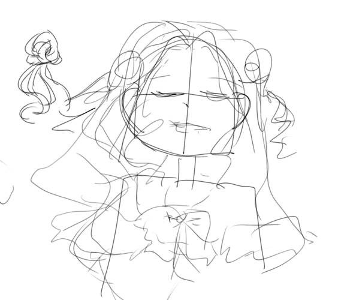
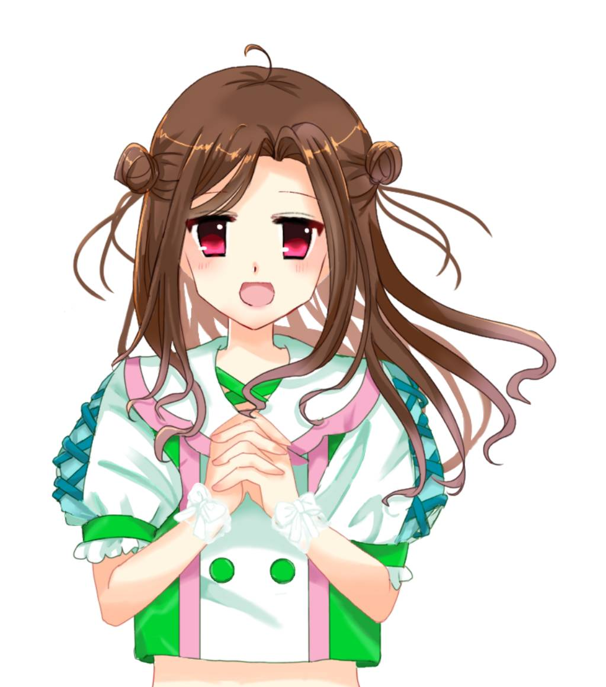
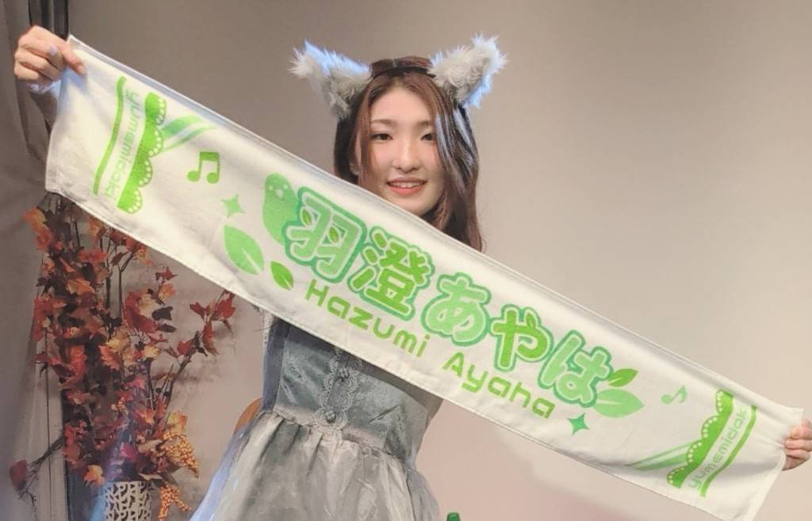

SET LIST
SET LIST
10/31(土) 二部 羽澄あやは生誕祭
①影ナレ
②ロマンティック浮かれモード（カバー）
③影ナレ録音
④SE はじめまして
⑤初めまして記念日
⑥春風
MC①
⑦すききらい
⑧君のとなり
MC②
⑨ソロカバーメドレー ギャルゲ2作品以上ある作品より抜粋
•サクライロノキセツ（D.C.シリーズより）
•Sound of Destiny（WHITE ALBUMシリーズより）
•ワールドエンド（グリザイアシリーズより）
⑨HIGAWARI PRINCESS（カバー）
⑩夢見るシンデレラ
⑪ぎゅっ
MC③
⑫ゆめみがち
⑬Only you!
MC④
【セトリについて】
裏テーマがギャルゲっぽいシナリオに沿ってというテーマでした（ちなみに誰にも言ってません笑）
だいたいの恋愛ゲームは出会ってから恋心を抱くという流れなのですが、
ゆめみどきには沢山恋の曲があるのでその背景を思い浮かべるようにセトリを組んでみました。
すききらい→君のとなり
の流れが個人的にお気に入りです。
ゆめみどきの曲は背景や情景描写が素敵で作詞をしてくださった先輩方すごいなぁと思うばかりです。
【ソロについて】
ロマモーは絶対にやりたい！と決めていて、みなみちゃんがロマモーのコールを聞きたい!
というのもあり入れさせていただきました。
（色んなところでみなみちゃんから激励の言葉をもらっていたよ〜）
ソロメドレーもせっかく聴いてくださるなら普段と歌い方の違う曲を入れて
全く曲を知らない方にも楽しんでもらえたらと思いながら選曲しました。
途中崩れ落ちてくださる方までいてニヤニヤしていました。ありがとう！
HIGAWARI PRINCESSは毎年やっている曲なのですが
メンバーとやってるところが見たい！とのお声をいただき今回実現しました！
めちゃくちゃ難しい曲なのに応えてくれた二人に大感謝です！
01
フライヤーについて
つぼみちゃん作。
オリジナルらしさを出してもらいました。ゆめみどきポーズしていたの気づいたかな？
ゆめみどきの羽澄あやはというのにこだわって作ってもらいました！

あやは作!イメージラフイラスト

目開きバージョン
02
生誕グッズについて
ずっとタオルを作りたいと思っていて今回実現しましたー！✨️
デザインは親友にお願いし、超超可愛いのが完成しました🫶
沢山みんなに使って欲しくて、使いやすさを考え細かいところまでこだわりました！
普段使いにもピッタリなのでライフ以外の私生活に少しでも彩りを添えられますように…！
